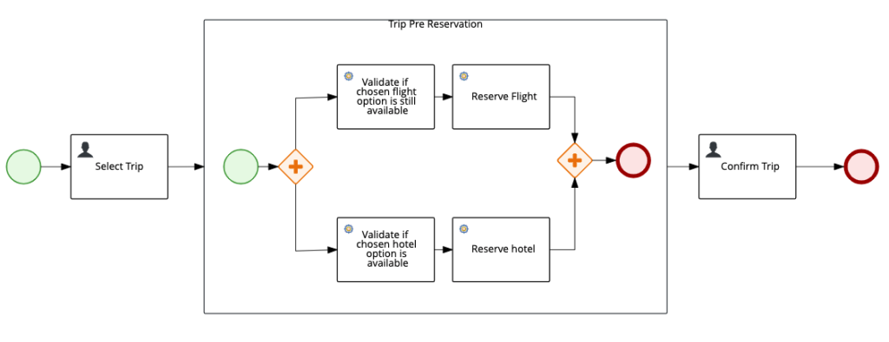
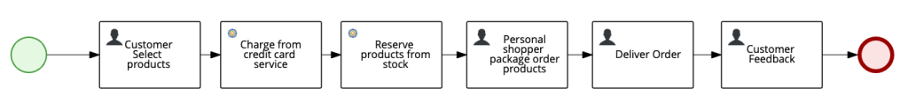
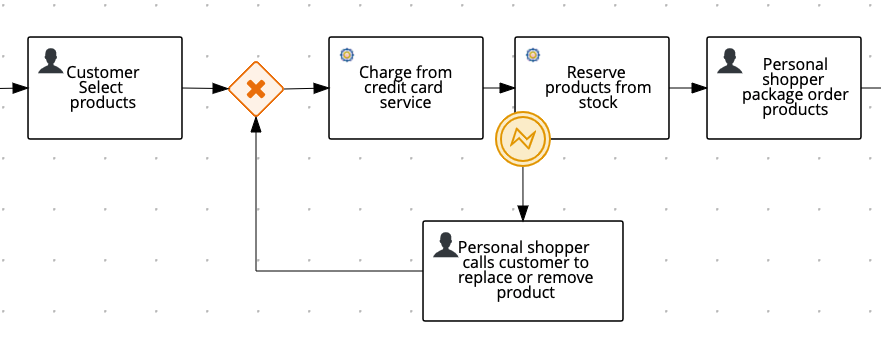
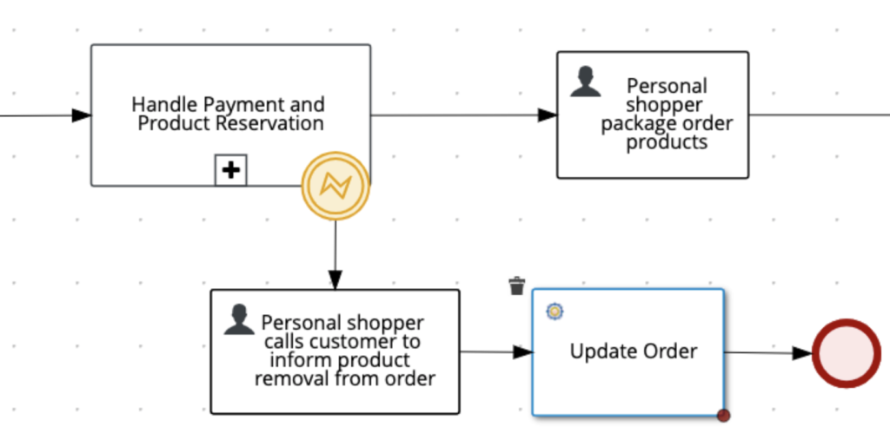
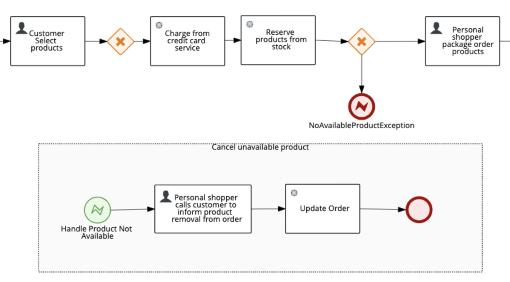

Dealing with Unexpected Errors in Processes
During the development phase, it is expected that developers deal and treat unexpected behaviors, predictable and unpredicted errors that might happen during the execution of code. Consider the following situation:
An online traveling company named MaTrip.com sells a whole trip experience with a discount for a single package buying: flight + hotel. But each of these services is independent as they are provided by external specialized companies. In this way, MaTrip orders need to interact with the services via services integration.
The customer has bought a trip package and the flight has already been successfully booked. What should happen if the hotel application services go offline for two days? Should the flight be canceled? Should it be automatically reassigned? Should the user be contacted in order to schedule a new trip?
There are several business outcomes to solve this scenario, all it takes is that the developer properly handles this incidents. There are cases where only the main biz scenarios are described by the biz team, and the development team does not have enough information to implement the exception handling. In these cases, the Business Analyst of the project should be involved in order to define the outcomes of these scenarios.
When handling errors like this, for example, in a Java or Javascript code, the developer directly implement exception handling with try and catch; When considering the endpoint layers, developers likely uses HTTP codes to transmit a proper message to the consumer; but, how to deal with exceptions and errors when working with a business flow?
Treating exceptions the right way
Give a look at the following situation, considering it is at an initial development phase. The “happy path” for this trip schedule flow is:

- The user selects a trip (User Task);
- An embedded subprocess starts to handle pre-reservation;
- Both hotel and flight tasks are parallelized for quicker processing ( Divergent Parallel Gateway); Flight and hotel availabilities are checked (RestTask);
- Flight and hotel are pre-reserved (Rest Task);
- The process only ends steps are completed for both flight and hotel( Convergent Parallel Gateway);
- Finally, the user confirms the trip(User Task).
There are two gaps in this process that can lead to instances aborted or failed:
- First uncovered scenario: The selected option (flight or hotel) is not available (business exception);
- Second uncovered scenario: One or more rest services are unavailable (runtime exception);
Treating Business Exceptions
Business Exceptions are errors that are not technical. They are not thrown by unexpectederrors in the code itself. See some examples of business exceptions:
- Sell a product that does not exist in the inventory;
- Reserve a seat in a full theater movie;
- Register a monthly payment twice in the same month;
These exceptions are examples of behaviors directly related to each domain exception. The recommended way to handle business exceptions would be to catch the error
using error events, and then, triggering following actions to handle the error according to the business logic. By using this approach, the whole process – including the treatment of the errors – is clear for all the personas involved in the project. This will facilitate validation by the business users and further maintenance, and enhancements.
Look at this process of a store which opted to follow digital transformation. They allow their customer to select products in a rich multi-channel online store; once payment is confirmed, a personal shopper manually chooses the items; finally, the delivery team takes the order to the customer address:

Both tasks Charge from credit card service and reserve products from stock are rest tasks. Eventually, the store can run out of available products in the stock when the task reserve products from stock is triggered. Does this look like a business exception to you?
- Reserve product from stock when the number of available products is zero.
We just identified a business exception: NoAvailableProductException. Let’s consider that this Java REST Service treats this error like this:
if (!product.isAvailable()){
log.error("Product is not available, throwing exception.");
throw new NoAvailableProductException(Response.Status.CONFLICT);
}
In this example, you can consider that NoAvailableProductException extends WebApplicationException.
Now, the author of the process design knows which error the service will throw in case of a NoAvailableProductException: HTTP 409 code.
 | javax.ws.rs.core.Response.Status.CONFLICT relates to HTTP 409. As per RFC specification, this code should be used in situations where the user might be able to try the same request and possibly get a different response. The server should include information about the error in the payload for the consumers. See more details in: https://tools.ietf.org/html/rfc7231#section-6.5.8 |
The business automation specialist also receives the updates from the business team, and the new exception flow business scope is also defined: if the product is not available, the personal shopper should call the consumer and switch missing item for a similar one or remove it from the order. The order price will change and the new value should be charged.
Scenario 1: The BA specialist increments his process to deal with the business exception thrown in a specific task: He/She added a boundary intermediate catch event to the REST Task. The error code is configured on the error events properties.

In this way, the business analyst can capture business exceptions thrown in specific tasks and provide proper handling for each scenario. But when there are too many possible errors, this approach can make the process too verbose and might affect the clarity of the flow.
Considering that the same business exception can be thrown by more than one task, the author can choose to group the tasks in a subprocess and catch the exception in the parent process definition. See the following scenario.
Scenario 2: Tasks inside a subprocess throw an error end event, which will be catch and handled by the parent process.

Another possible approach is to store the output of the processing in a process variable instead of throwing an exception. Based on the variable value, a gateway can lead to an end error event which will be handled by an event subprocess.
Scenario 3: Process throws an error endevent, which will be handled by an event subprocess with a starting error event.

The author of the process should choose the proper option which better suits the business needs, worrying about the variable scopes and with the understanding and maintainability of the process. On scenario 2 for example, the variables contained inside the subprocess, will not be available during the handling of the exception in the parent process.
Treating business exceptions inside a business process is considered an advanced process modeling technique, and is crucial for proper implementation of successful projects. The Business Exceptions also matters for the organization improvement and the modeling of it can also lead to the creation of business monitoring dashboards.
Treating Technical Exceptions
Technical exceptions are raised within the code implementation itself and are not related to the domain flow. It can happen on script tasks, on custom code implemented on “On Entry” an “On Exit” properties of tasks and custom Work Item Handlers. See some examples of technical exception:
- Can’t unmarshall an object into a specific class;
- Try to execute an operation in a null object;
- Try to cast an object which cannot be cast;
Integration with external components should be handled by external services and not by treated by the process design itself
These kinds of errors can and should be avoided by leveraging the usage of custom code to necessary scenarios, and by increasing the usage of the provided native features. Exceptions raised on script tasks, cannot be caught and handled by the error events demonstrated on the “Business Exceptions” examples.
This blog post is part of the fourth section of the jBPM Getting started series:
Effective modeling, Integration and Delivery.